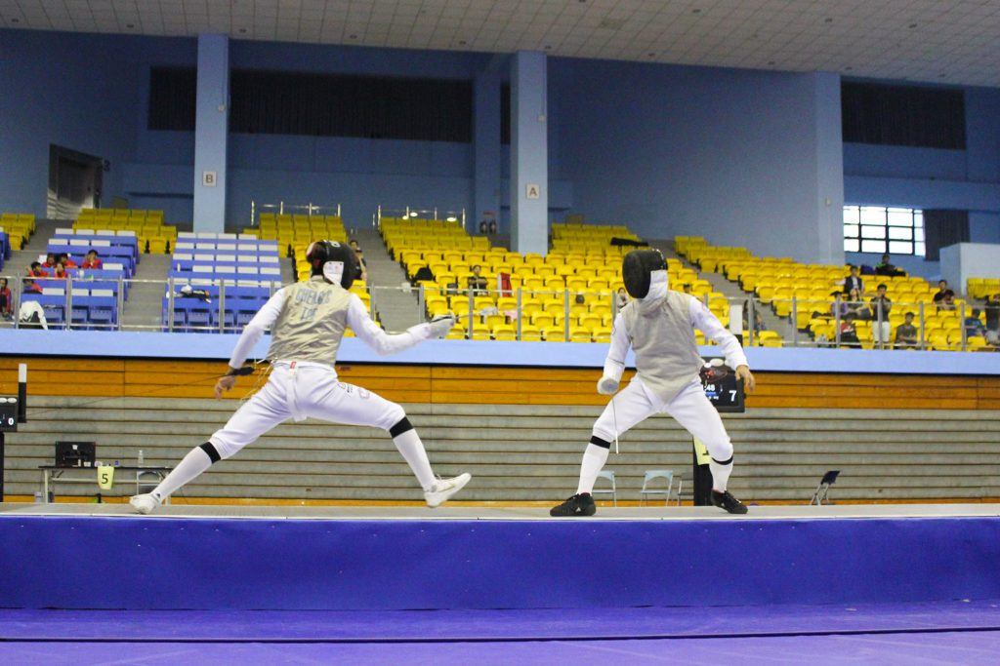
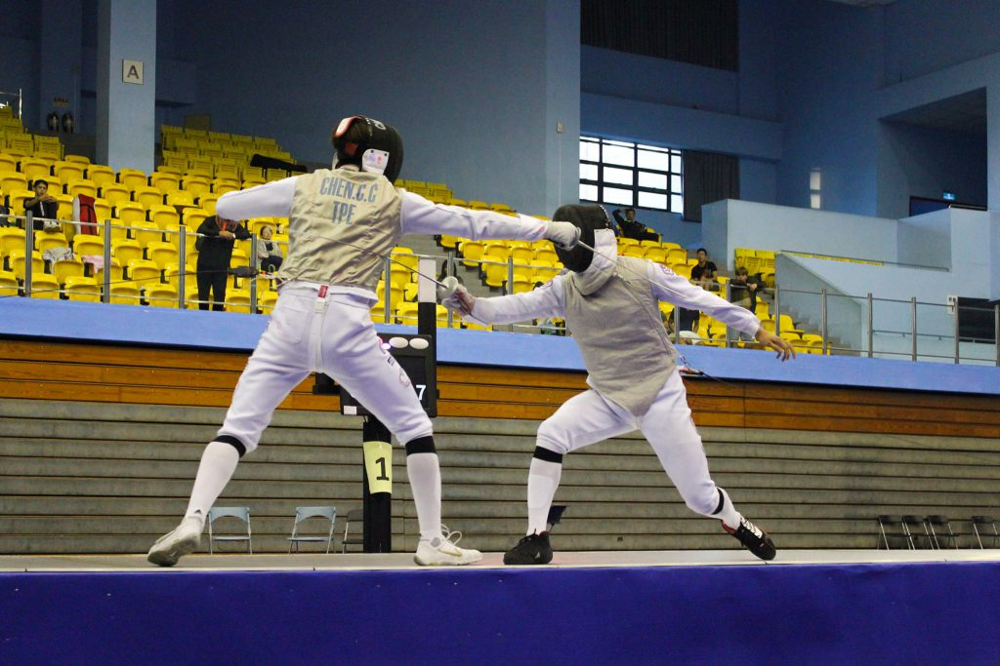

體育
擊劍攻防戰 陳致傑飛身刺擊搶下關鍵分
刊出日期：2019/11/22
【記者白欣台北報導】劍擊鏗鏘聲不絕於耳，雙方在狹長賽場上，來回展開攻防戰，爭奪「攻擊權」（註）。2019台北公開賽暨第24屆聯新盃全國擊劍錦標賽在台北體育館盛大登場，16日進行男子鈍劍組賽程。選手在冠亞賽展開激戰，最終國立臺灣體育運動大學的陳致傑以一記飛身刺擊，搶下最後關鍵一分，奪得冠軍。
註：擊劍的鈍劍與軍刀項目有「攻擊權」規則。當選手將劍尖威脅對手的得分有效部位，持續進攻，即取得攻擊權。裁判必須從選手的腳步、伸手動作判斷，取得攻擊權擊中有效部位才算得分。若雙方同時擊中有效部位，則由裁判判定有攻擊權的一方得分，雙方不會同時得分。
「心情其實還好，因為我的目標就是要打第一名。」陳致傑表示，這場比賽是2020年夏季奧林匹克運動會外卡賽的前哨戰，且為今年最後一場積分賽，格外重要，「假如我這場沒有第一的話，可能就無法在國內的選拔中突出。」
談及獲勝關鍵，陳致傑說：「攻擊對我來說比較有優勢，因為我身高在國內算高，所以進攻會打得比較吃香一點。」至於對戰過程的攻擊權爭搶，他分析道：「我比較會積極搶攻，去破壞對方的攻擊，或是在對方停頓的瞬間，敲擊劍柄以轉換攻擊權。」教練陳柏槐亦讚揚自家選手的表現，「致傑判斷攻擊權的時機還滿精準的，敏捷性跟速度也很快，而且身形高，所以攻擊的延伸空間也比較多。」
>

來自國立臺灣體育運動大學、奪下男子鈍劍組冠軍的選手陳致傑，善用身形優勢，以延伸攻擊空間。 圖／白欣攝
對於近期陳致傑備戰調整方向，陳柏槐說：「其實還有很多要努力的地方。」他補充，在國際賽場或是面對同樣身形選手時，陳致傑的身材優勢減少，對應顯得生疏。未來將對此強化訓練，並熟悉相關戰術應用。
而在冠軍賽落敗、就讀國立體育大學的徐碩廷則相當坦然，「打到第二名，我覺得還算可以。」他表示，前陣子著重於中華民國108年全國運動會的準備，進行數月的高強度訓練，導致在決賽後半段，已無力防禦對手的攻擊。「太累了，所以全運會結束後，就有點鬆懈。」
本次比賽首度進行全程實況轉播，中華民國擊劍協會秘書長洪新志說明，透過轉播方式，可以讓從未接觸過擊劍的群眾藉此認識擊劍。此外，洪新志也樂觀看待近年擊劍發展，他說：「近幾年的發展是有轉變、突破的。」他分享，擊劍協會正在進行人才扎根的努力，盼經由賽事推廣，為台灣的擊劍運動挹注新血。

鈍劍為擊劍運動中，有效攻擊區域最小的項目，僅有選手穿著金屬背心的範圍為有效得分區。 圖／白欣攝
#大學報
#徐碩廷
#擊劍
#聯新盃
#鈍劍
#陳致傑
#體育